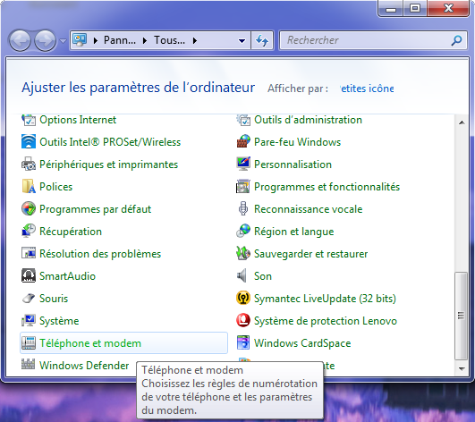
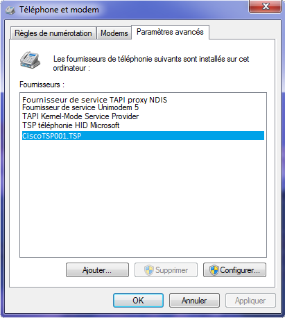
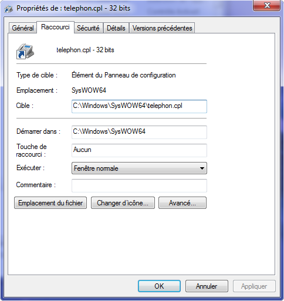

Pour permettre au "Connecteur Divalto pour Tapi" de fonctionner, il est nécessaire d’installer le driver TSP Tapi 2.x fourni avec votre logiciel de téléphonie.
Après l'installation, vérifiez que ce driver est visible par la couche logicielle Tapi de Windows. Pour cela, lancez le choix « Téléphone et modem» du Panneau de configuration :

Et vérifiez que votre driver TSP figure bien dans la liste des fournisseurs de téléphonie :

Attention :
Il faut installer un driver de téléphonie 32 bits. En général, les fournisseurs proposent un driver 32 bits pour les machines 32 bits et deux drivers (un en 32bits et un en 64bits) pour les machines 64 bits.
Attention aussi à la version de Windows du poste client, en particulier pour les systèmes Windows Vista et Windows 7. Le cas échéant, renseignez-vous auprès de votre fournisseur de téléphonie.
Sur les machines 64 bits, le choix « Téléphone et modem » du Panneau de configuration appelle Tapi 64 bits.
Or ce n’est pas la couche logicielle que Divalto utilise.
Pour appeler la couche 32 bits de Tapi, il faut lancer c:\Windows\SysWOPW64\telephon.cpl ou passer par un raccourci comme celui montré par l’image suivante :
